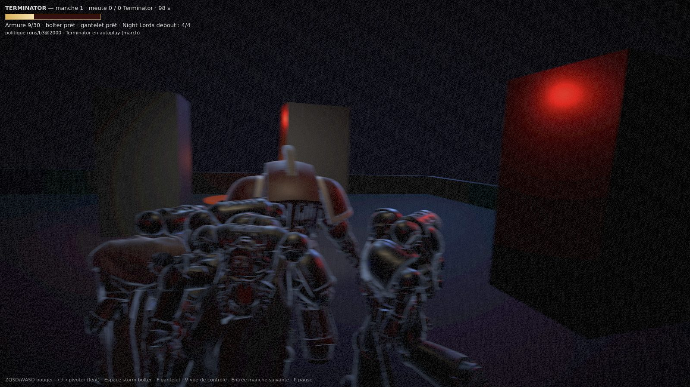
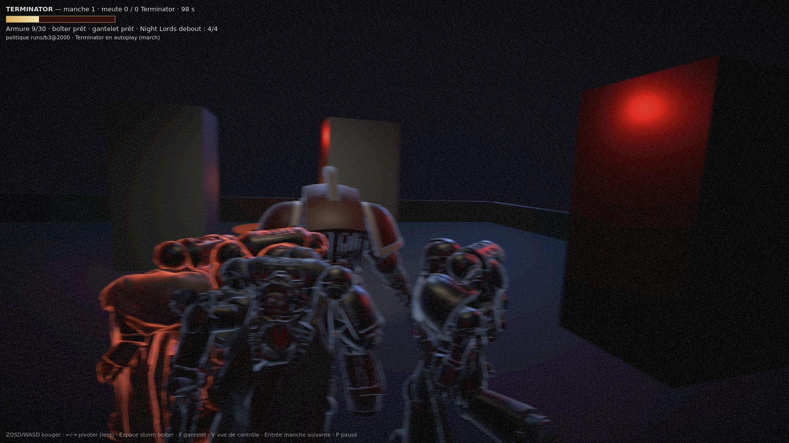
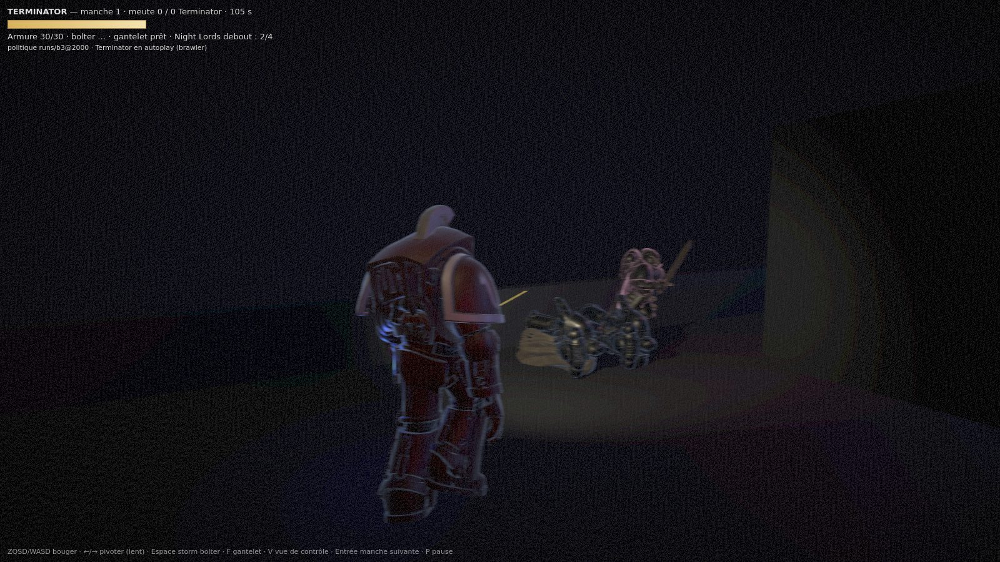
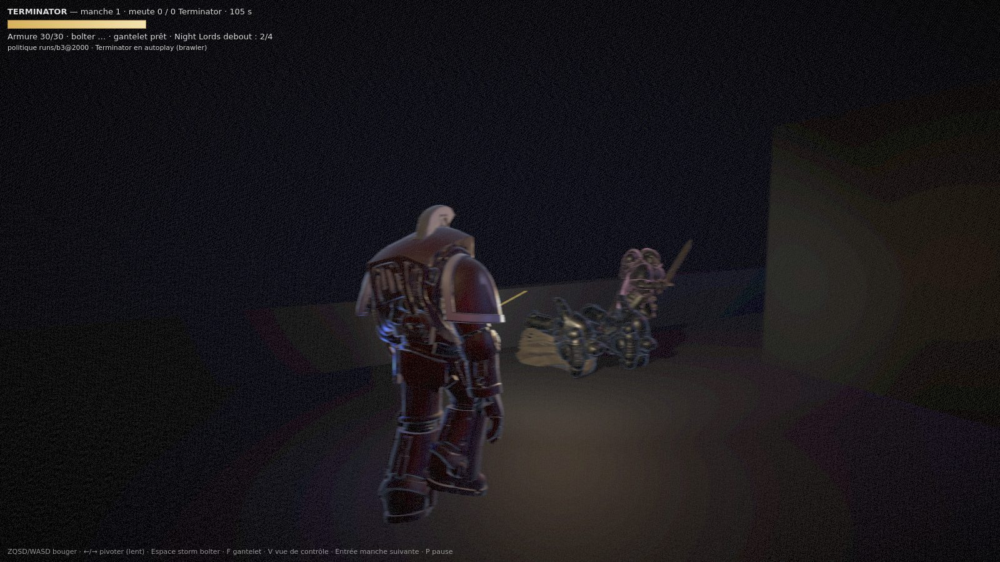

1600×900, aucune retouche. 10 ticks = 1 s. ?tell=0 coupe le télégraphe, ?impact=0 coupe poids et flash. Le ?shot=N s'arrête sur le tick N : les deux images d'une paire sont le même tick, la même graine.

?tell=0 — les griffes s'arment, rien ne le dit?autoplay=march. Deux des trois assaillants ont la griffe armée (armTicks = 2 et 1) : le coup tombe dans 100 et 200 ms. Leur liseré reste froid, bleu : indistinguable d'une griffe en recharge.

?impact=0 — la rafale part, chambre noire?autoplay=brawler. Un Night Lord debout à 6,3 m dans l'axe, un second au sol plus près. La trace du bolter est visible ; rien n'éclaire.
step (position, pied, intensité), le télégraphe de armTicks, le son des six mêmes événements.
| à l'épaule | impact = 0 | |
| course verticale | 83 mm | 56 mm |
| écart-type de la hauteur | 21,2 mm | 19,6 mm |
| appui du pas | 0,47° = 6,8 px | 0 |
| télégraphe armé | +2,2/255 sur la région du Night Lord, +27,6 en bloc | 0 |
| flash, image entière | +4,9/255, 46 % des blocs > 2 | 0 |
| draw calls / triangles | inchangés | inchangés |